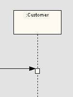
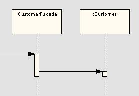
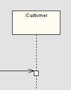
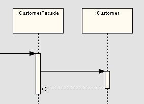
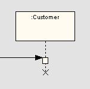
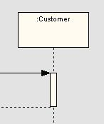

|
| 소프트웨어 아키텍처와 구현환경을 고려하여 시간 순서에 따른 설계클래스 인스턴스(객체) 간의 상호작용을 표현하며, 클래스의 생성과 소멸 및 각 클래스가 갖는 오퍼레이션을 정제한다. |
Domains: 설계모델
Extends and Replaces: 시퀀스다이어그램 |
|
Relationships
| Roles | Responsible:
| Modified By:
|
| Tasks | Input To:
| Output From:
|
| Process Usage |
|
Description
| Main Description |
[시퀀스다이어그램]
작성항목
-
객체(Object)
: 메시지를
받아서 그 결과로 다시 다른 객체에게 메시지를 던지는 수동적인 형태이다.
-
메시지(Message)
: 서로 다른 객체 간의 상호 작용을 나타낸다. 해당 객체가 가지고 있는 오퍼레이션을 사용하며 각 메시지 마다 순서가 존재한다. 메시지는 객체지향 패러다임에서 객체와 객체가 통신하는 유일한
수단이다.
-
Flat
Flow of Control : 가장 일반적인 메시지

-
Nested
Flow of Control : 메시지가 중첩되는 경우 내부 메시지 결과가 모두 돌아와야 다음 처리를 진행한다. 이것은 메시지의 결과가 돌려지게 될 때까지 다음 처리를 진행하지 않는
Synchronous 메시지이며 닫힌 화살표가 한쪽에 붙은 실선으로 표기한다.

-
Asynchronous
Flow of Control : 메시지의 결과를 기다리지 않고 다음 처리를 진행한다. 열린 화살표가 붙은 실선으로 표기한다.

-
Return
Flow : 메시지를 처리한 결과를 나타내며, 필요한 경우에만 사용한다. 열린 화살표가 붙은 점선으로 표기한다.

-
Lifeline
: 시간의 주기 동안 객체의 생존을 나타낸다. 점선에 X표시가 객체가 소멸하는 시점을 나타낸다.

-
Activation
: 객체가 수행되고 있음을 나타내며 사각형의 길이는 오퍼레이션의 실행 소요 시간을 의미한다. 해당 객체가 보낸 메시지에 대한 return flow를 기다리는 기간을 lifeline에 명시적으로
표시할 경우에 사용한다. 좁고 긴 사각형으로 표기한다.

|
Illustrations
Key Considerations
작성시
고려사항
-
시퀀스다이어그램(설계)은
유스케이스 혹은 클래스/컴포넌트 오퍼레이션 단위로 작업한다. 필요시 두 형태 모두 작성 가능하다.
-
특정
영역에 대한 상세한 설계 시퀀스다이어그램은 다음 기준에 해당하는 상황에 작성한다.
-
중요한(핵심)
비즈니스 로직일 때
-
매우
복잡하거나 현재 기능 구현이 모호하다고 판단될 때
-
기능적으로
커버리지가 큰 로직일 때
-
시뮬레이션
레벨로 검증할 필요가 있는 비즈니스 로직일 때
-
설계단계에
중요한 비즈니스 객체가 새로 정의 되었을 때
-
분석단계에서
도출된 하나의 오퍼레이션이 여러 개의 오퍼레이션으로 분리될 필요가 있을 때
-
객체의
생명주기 파악이 반드시 필요할 때
|
Tailoring
| Impact of not having |
미작성시
영향
-
구현해야
할 클래스가 갖는 오퍼레이션의 처리 순서를 파악하기 어렵다.
-
클래스다이어그램(설계)에
도출된 클래스와 동적 모델에서 도출된 객체가 상호 대응되는지 검증하기 어렵다.
-
클래스다이어그램(설계)에
도출된 클래스의 오퍼레이션과 객체 간의 동적 모델의 메시지가 상호 대응되는 지 검증하기 어렵다.
-
중복된
클래스의 오퍼레이션을 파악하기 어렵다.
-
객체의
생성 및 소멸 시기를 파악하기 어렵다.
|
| Reasons for not needing |
작성이
불필요한 경우
-
기본적으로
선택 산출물이며 특정 부분에서 상세한 설계 시퀀스다이어그램은 필요 시 선택적으로 작성하도록 한다. 특히, 소프트웨어 아키텍처 정의를 통해 설계 전략이 결정된 경우 준수해야 할 개발 표준으로서 유형별
시퀀스다이어그램(설계)를 작성할 수 있다.
-
또한
다음과 같은 경우 시퀀스다이어그램(설계) 작성을 고려해 볼 수 있다.
-
중요한(핵심)
비즈니스 로직일 때
-
매우
복잡하거나 현재 기능 구현이 모호하다고 판단될 때
-
기능적으로
커버리지가 큰 로직일 때
-
시뮬레이션
레벨로 검증할 필요가 있는 비즈니스 로직일 때
-
설계단계에
중요한 비즈니스 객체가 새로 정의 되었을 때
-
분석단계에서
도출된 하나의 오퍼레이션이 여러 개의 오퍼레이션으로 분리될 필요가 있을 때
-
객체의
생명주기 파악이 반드시 필요할 때
|
| Representation Options |
제출시
고려사항
|
|